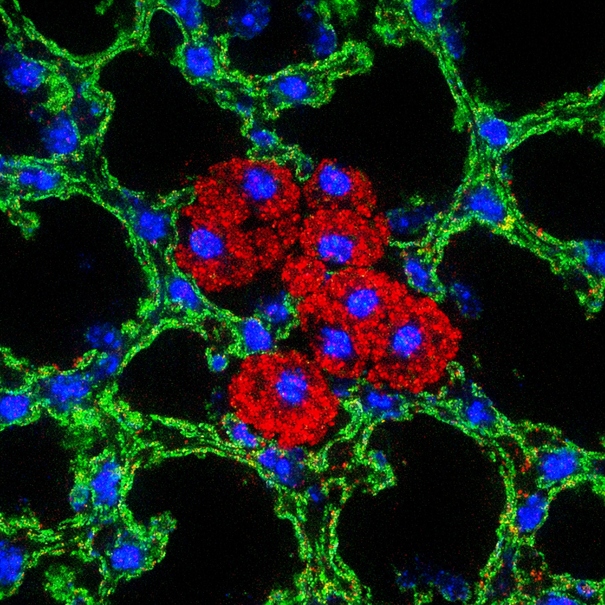
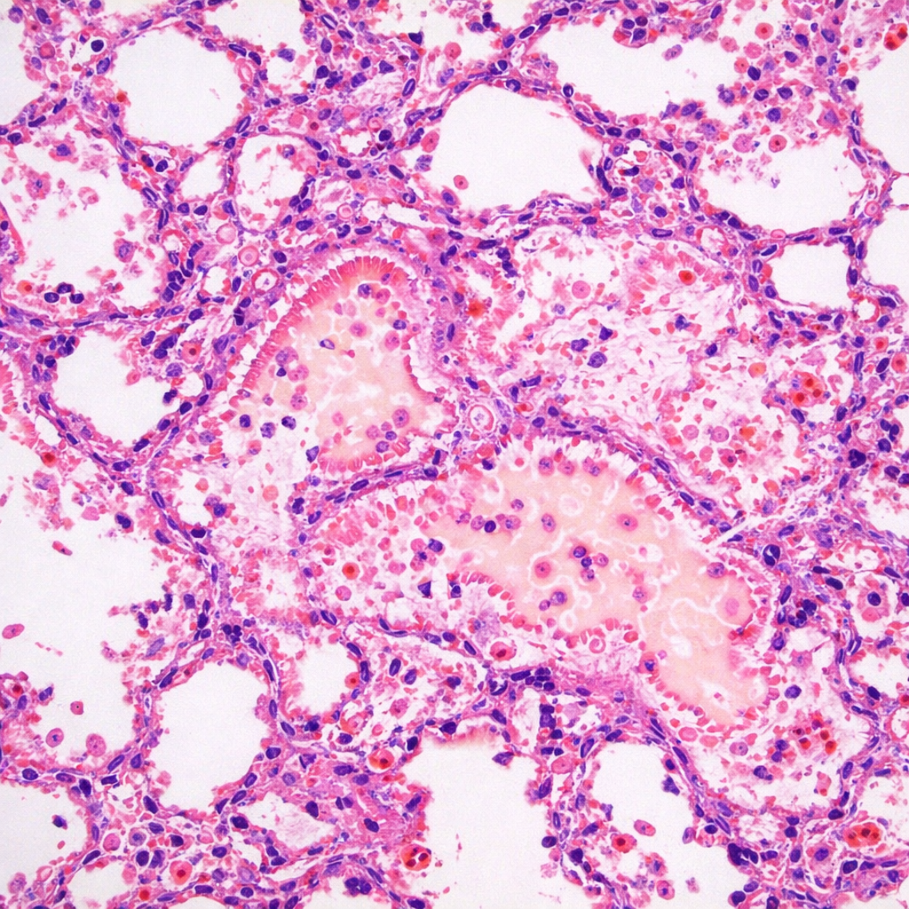
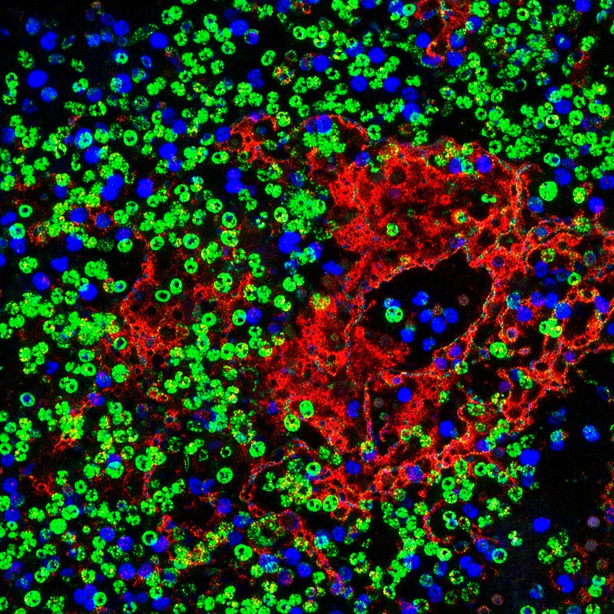
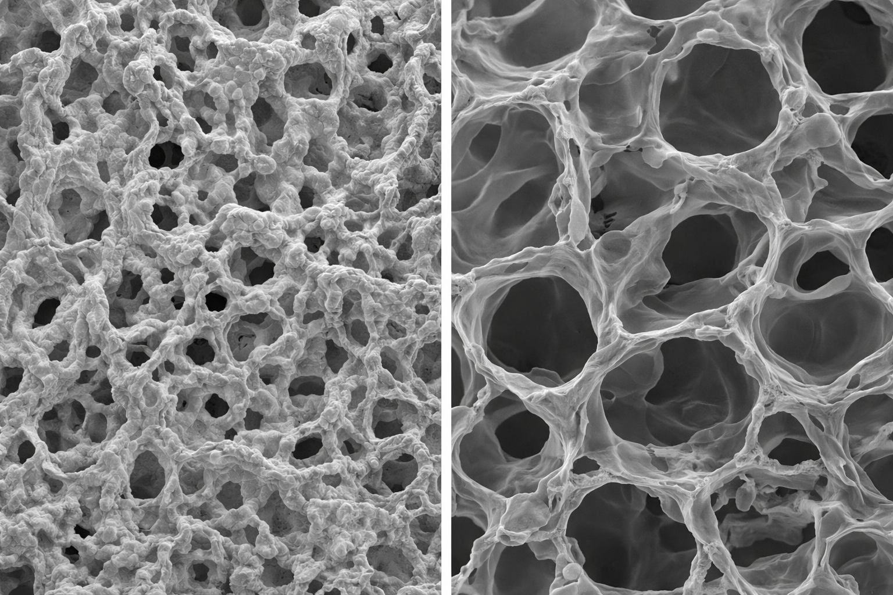

© 2026 Beata Kosmider Lab
Site designed by Z. Zhou

Alveolar Type II Cell Biology | Lung Regeneration | Inflammation Research
Our laboratory studies the biology of primary AT2 cells, the progenitor cells of the alveolar epithelium. In addition to producing and secreting pulmonary surfactants essential for normal lung function, they regenerate damaged alveoli by proliferating and differentiating into AT1 cells after injury. Using advanced molecular, cellular, and translational approaches, we elucidate the mechanisms that regulate AT2 cell function.

We investigate how exposure to harmful environmental and infectious agents, including cigarette smoke, e-cigarette aerosols, bacteria, and viruses, injures AT2 cells and compromises their capacity to repair the alveolar epithelium. Using human and murine lung tissues, we identify the cellular and molecular mechanisms that drive AT2 cell dysfunction, death, and impaired regeneration.
Our goal is to uncover therapeutic targets that restore normal alveolar repair and preserve lung function after injury.

Chronic inflammation is a major driver of alveolar epithelial injury and contributes to the development and progression of chronic lung diseases, including emphysema. To identify novel therapeutic strategies, we are evaluating small molecules that enhance endogenous antioxidant defenses and promote inflammation resolution.
Our ultimate goal is to restore alveolar epithelial function, improve lung repair, and prevent progressive tissue destruction after injury.

Emphysema is a progressive lung disease characterized by destruction of alveolar structures, enlargement of air spaces, and loss of respiratory function. Current treatments primarily alleviate symptoms and do not prevent disease progression, underscoring the need for effective regenerative therapies.
Using primary AT2 cells isolated from the lungs of patients with emphysema undergoing lung transplantation, our research focuses on elucidating the cellular and molecular mechanisms underlying impaired AT2 cell-mediated repair.

© 2026 Beata Kosmider Lab
Site designed by Z. Zhou